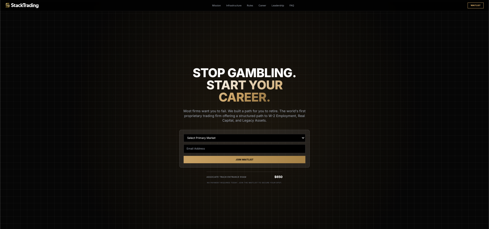
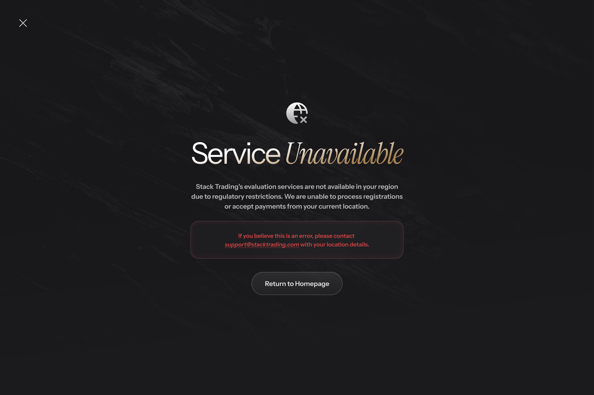
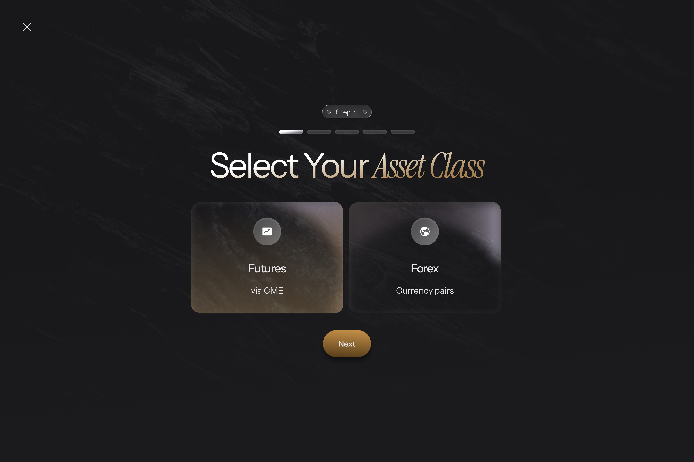
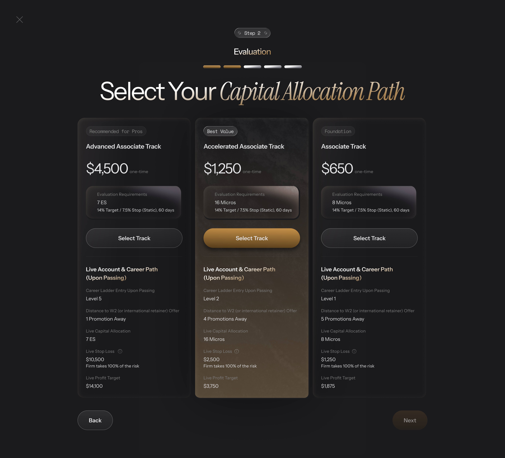
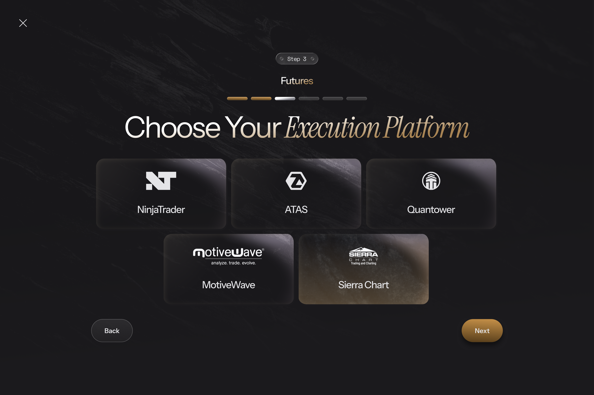
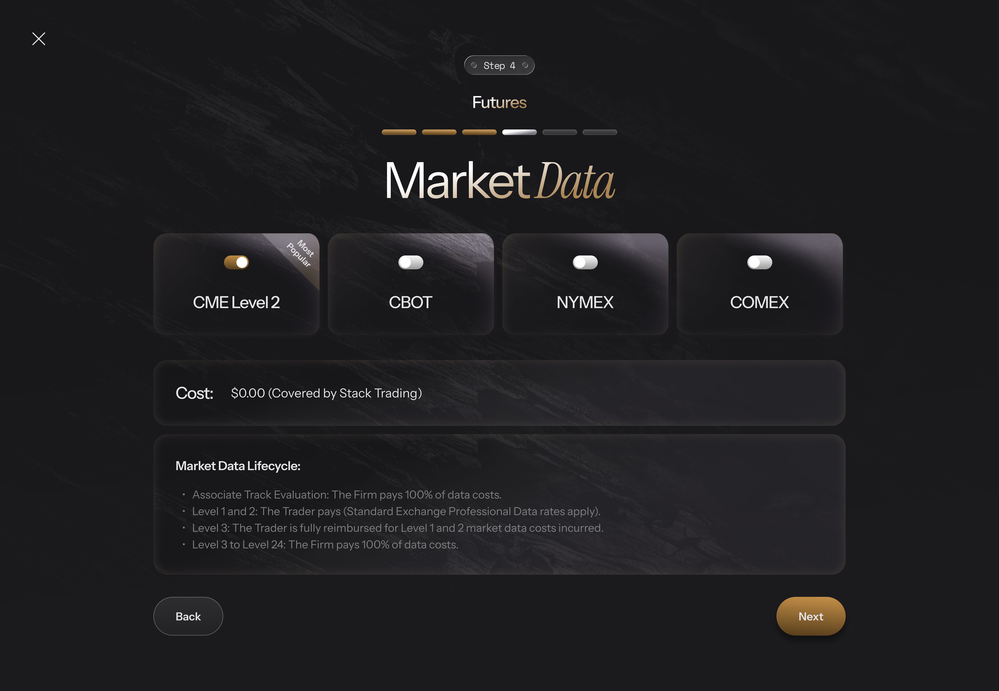
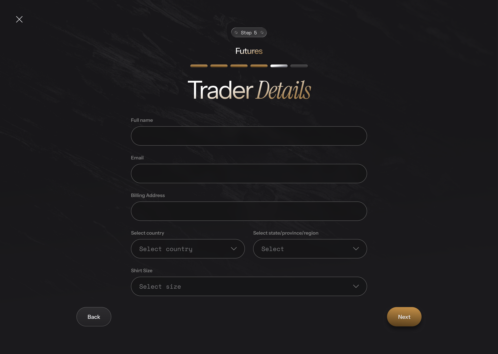
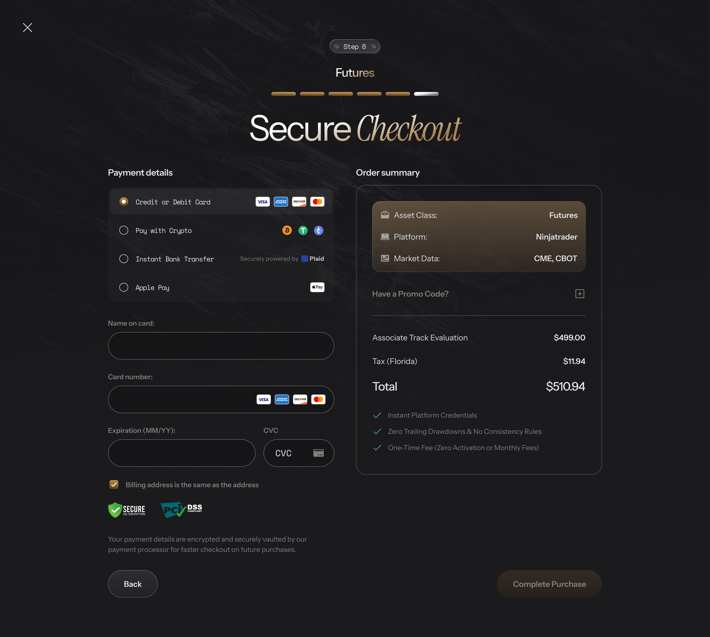
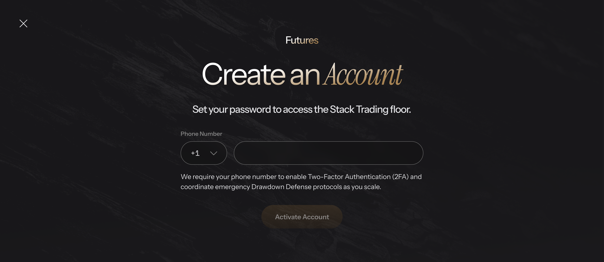

Associate Track Check Out
TABLE OF CONTENTS
| Step | Use Cases | Description |
|---|---|---|
| Step 0 | UC_1.1 – UC_1.5 | System Initialization & Access Gates |
| Step 1 | UC_2 | Asset Class Selection |
| Step 2 | UC_3 | Capital Allocation Selection |
| Step 3 | UC_4 | Platform Selection |
| Step 4 | UC_5 | Market Data Selection (Futures only) |
| Step 5 | UC_6.1 – UC_6.2 | PII Capture, Compliance & Cart Abandonment |
| Step 6 | UC_7.1 – UC_7.5 | Checkout & Payment |
| Step 7 | UC_8.1 – UC_8.3 | Order Processing & Provisioning |
STEP 0 - SYSTEM INITIALIZATION & ACCESS GATES
UC_1.1 - System Status API
1. USE CASE SPECIFICATION TABLE
| Field | Content |
|---|---|
| Use Case ID | UC_1.1 |
| Use Case Name | System Status API |
| Use Case Description | This use case allows the System to retrieve, in a single call, all geo-routing, pricing, cohort, and payment-method configuration needed to render the entire checkout flow, in order to avoid repeated API calls and centralize checkout state. |
| Actor(s) | User (implicit — triggers via page load), System, Cloudflare (geo-IP) |
| Pre-Condition(s) | User is on the checkout page. No prior GET /system/status response exists in the current session. |
| Trigger | User navigates to the dedicated checkout page URL for the first time in the session. |
| Post-Condition(s) | Full response payload stored in global checkout state. Gate 1 and Gate 2 conditions evaluated immediately. |
| Basic Flow | 1. User navigates to checkout page. 2. Frontend calls GET /system/status (Cloudflare headers CF-IPCountry/CF-Region auto-included). 3. Backend processes in order: Geo-IP Gate → Waitlist Gate → UI Routing → Gateway Filtering & Localization → Cohort & Pricing → Launch Phase & Pass Rate. 4. Backend returns JSON (unless early-returned at Geo-IP or Waitlist gate). 5. Frontend stores full response in global checkout state. |
| List Screen | Checkout page (dedicated route, no Marketing Header/Footer except on Gate 1 redirect) |
| Exception Flow | E1 — Network error/timeout: checkout UI not rendered. E2 — HTTP 5xx: full-page error. E3 — Geo headers missing/empty/"XX": defaults to geo_country='US', required_flow='FLOW_A', user NOT blocked. E4 — checkout_ui_routing returns 0 rows: defaults to FLOW_A, user NOT blocked. |
2. ACTIVITY FLOW
flowchart TD
subgraph User
A([Start: Navigate to Checkout URL])
end
subgraph System
B[Call GET /system/status]
C{Step 3a: Geo-IP Gate<br/>Match Compliance_geo_restrictions?}
D[Return geo_blocked=true<br/>SKIP remaining steps]
E{Step 3b: Waitlist Gate<br/>Allow_New_Signups?}
F[Return payload<br/>SKIP remaining steps]
G[Step 3c: UI Routing<br/>Query checkout_ui_routing]
H[Step 3d: Gateway Filtering<br/>Query Payment_Method_Config]
I[Step 3e: Cohort and Pricing<br/>Query Table C + Table J]
J[Step 3f: Launch Phase and Pass Rate<br/>Query Platform_Configuration]
K[Return full JSON payload]
end
subgraph Frontend
L[Store response in<br/>global checkout state]
M[Render Gate 2 - Geoblock]
N[Redirect to Waitlist page]
O[Render Step 1]
end
A --> B --> C
C -- Match: TRUE --> D --> M
C -- No match: FALSE --> E
E -- FALSE --> F --> N
E -- TRUE --> G --> H --> I --> J --> K --> L --> O3. SCREEN DESCRIPTION
N/A — this is a background check with no screen of its own. Its result decides which of the three following screens the user actually sees: Step 1, the Waitlist page, or the region-block screen.
4. BUSINESS RULES
| # | BR Code | Function | Description |
|---|---|---|---|
| 1 | BR_1.1.1 | Single Call Per Session | GET /system/status called exactly once per checkout page load. Step navigation (Steps 1–5) does NOT trigger a new call. Full page refresh triggers a new call to re-hydrate global state. |
| 2 | BR_1.1.2 | Response Persistence | Full API response stored in global checkout state. All subsequent steps read from cached state — no re-fetching. |
5. MESSAGE LIST
| # | Message Code | Type | Trigger |
|---|---|---|---|
| 1 | MSG-01 | Toast | Network error/timeout on GET /system/status |
| 2 | MSG-02 | Full-page Error | HTTP 5xx from GET /system/status |
Full message text: see MESSAGE CATALOG at the end of this document.
UC_1.2 - Geo-Based Compliance UI Variants (Flow A–G)
1. USE CASE SPECIFICATION TABLE
| Field | Content |
|---|---|
| Use Case ID | UC_1.2 |
| Use Case Name | Geo-Based Compliance UI Variants (Flow A–G) |
| Use Case Description | This use case allows the System to render the correct region-specific compliance disclosures and checkboxes at Step 5, in order to satisfy local regulatory requirements without manual per-country customization by developers. |
| Actor(s) | System |
| Pre-Condition(s) | required_flow stored in global checkout state (from Step 0). |
| Trigger | Step 5 renders. |
| Post-Condition(s) | Correct flow-specific compliance content (disclosures + checkboxes) is displayed. |
| Basic Flow | 1. Step 5 mounts. 2. Frontend reads required_flow from state. 3. Frontend renders the matching hardcoded UI variant per the routing table below. |
| List Screen | Step 5 (PII & Compliance) |
| Exception Flow | N/A — routing itself has no failure state; unmatched country defaults to Flow A at the backend level (see UC_1.1). |
2. ROUTING TABLE (Flow A–G)
| Flow | Countries / Regions | UI Behavior at Step 5 |
|---|---|---|
| A | USA + all unmatched (default) | 2 standard checkboxes only |
| B | UK, Australia | 2 checkboxes + pass-rate disclosure (varies by is_launch_phase) |
| C | EU/EEA (29 countries) | 2 checkboxes + pass-rate disclosure + 1 EU 14-day waiver checkbox (3 total) |
| D | Canada — Quebec only | Entire checkout UI (Steps 1–7) in French, incl. all labels/errors/toasts. Standard 2 checkboxes |
| E | UAE | 2 checkboxes + DFSA/ADGM non-regulation disclaimer |
| F | Sanctioned countries | Hard block — Gate 2 (UC_1.4). Step 5 never reached |
| G | India | 2 standard checkboxes only |
3. SCREEN DESCRIPTION
Flow A: Global Default UI

| # | Component | Type | Required? | Description |
|---|---|---|---|---|
| 1 | Checkbox 1 — Commercial Acknowledgment | Checkbox | Yes | Description: Confirms user understands they are purchasing a skills-assessment evaluation, not opening a brokerage account. Displaying Rules: Default unchecked, all flows except F. Exact text: "I acknowledge that I am purchasing a skills assessment software evaluation for commercial purposes to secure an independent contractor agreement with a US-domiciled C-Corporation, and I am not opening a retail financial, brokerage, or investment account." Behaviour Rules: N/A. Validation Rules: Must be checked before [Next] enables. |
| 2 | Checkbox 2 — Age & ToS | Checkbox | Yes | Description: Confirms age ≥18 and agreement to ToS. Displaying Rules: Default unchecked. Text: "By clicking 'Complete Purchase', I confirm that I am at least 18 years of age and agree to the Terms of Service for the Data Processing and Performance Evaluation Service (Associate Track)." The words "Terms of Service" are a clickable hyperlink. Behaviour Rules: Click "Terms of Service" → opens Modal MDL-01 with ToS content (same as public /terms page) — does NOT navigate away or reset checkout. Closing modal preserves all form state. Validation Rules: Must be checked before [Next] enables. |
| 3 | Checkbox 3 — EU Withdrawal Waiver (Flow C only) | Checkbox | Yes (Flow C only) | Description: EU-specific 14-day withdrawal waiver, legally required for EU/EEA. Displaying Rules: Only rendered for Flow C. Default unchecked. Text: "I expressly consent to the immediate commencement of the digital evaluation service and waive my 14-day right of withdrawal under EU consumer protection law." Positioned between standard checkboxes and [Next]. Behaviour Rules: N/A. Validation Rules: Must be checked before [Next] enables (Flow C only). |
| 4 | Pass-Rate Disclosure (Flow B, C) | Static Text | N/A | Description: Discloses historical pass rate or launch-phase unavailability. Displaying Rules: Above standard checkboxes. If is_launch_phase = TRUE: "This is a newly launched proprietary trading evaluation program. Historical pass-rate and success data is currently unavailable." Else: "Historically, only [historical_pass_rate]% of participants successfully pass the evaluation to become authorized traders." Same text for UK & Australia. Behaviour/Validation: N/A. |
| 5 | UAE Disclaimer (Flow E) | Static Text | N/A | Description: Discloses non-regulation status in UAE. Displaying Rules: Above standard checkboxes, Flow E only. Text: "Stack Trading is a U.S.-domiciled entity and is not licensed, registered, or regulated by the Dubai Financial Services Authority (DFSA) or the Abu Dhabi Global Market (ADGM)." |
| 6 | Hypothetical Performance Disclaimer (All flows) | Static Text | N/A | Description: Mandatory legal disclaimer on simulated performance. Displaying Rules: Always visible, non-collapsible, all flows. Full CFTC-style disclaimer text. No user interaction. |
4. BUSINESS RULES
| # | BR Code | Function | Description |
|---|---|---|---|
| 1 | BR_1.2.1 | Flow-to-UI Mapping is Frontend-Hardcoded | The mapping of required_flow → UI content is hardcoded in frontend (fixed enum switch). Changing content requires a FE code change. |
| 2 | BR_1.2.2 | Country-to-Flow Assignment is Dynamic (DB-Driven) | Which country maps to which flow is managed via checkout_ui_routing PostgreSQL table — Ops-configurable without code deploy. |
5. MESSAGE LIST
N/A — this UC has no error/toast messages of its own; all content is static. (Modal MDL-01 is referenced in §3 row 2 — see MODAL CATALOG at the end of this document.)
UC_1.3 — Gate 1: Waitlist
1. USE CASE SPECIFICATION TABLE
| Field | Content |
|---|---|
| Use Case ID | UC_1.3 |
| Use Case Name | Gate 1 — Waitlist |
| Use Case Description | This use case allows the User to join a waitlist when new signups are paused, in order to be notified and retain their place once enrollment reopens. |
| Actor(s) | User, ActiveCampaign, Klaviyo |
| Pre-Condition(s) | User is on checkout page. GET /system/status returns Global_Var_Allow_New_Signups == FALSE. |
| Trigger | Global_Var_Allow_New_Signups == FALSE detected in /system/status response. |
| Post-Condition(s) | Direct API calls fired to BOTH Klaviyo and ActiveCampaign with email + UTM. Page shows success state. |
| Basic Flow | 1. /system/status returns flag FALSE. 2. Frontend redirects (client-side, same tab) to dedicated Waitlist page — Marketing Header/Footer rendered. 3. User selects Primary Market (Futures/Forex). 4. User enters email. 5. User clicks [Join Waitlist] (button behavior: Ref CR-06). 6. Frontend reads UTM per CR-05, calls Klaviyo + ActiveCampaign APIs directly and in parallel. 7. On success → success state ( MSG-03). 8. User clicks [Return to Homepage] → navigated to homepage. |
| List Screen | Waitlist Page |
| Exception Flow | E1 — CRM API fails on submit (MSG-04): Button reverts to "Join Waitlist" (enabled). Form data NOT cleared. |
2. ACTIVITY FLOW
flowchart TD
subgraph User
A([Start]) --> B[Select Primary Market]
B --> C[Enter Email]
C --> D[Click Join Waitlist]
H[See MSG-03 success state] --> I([End - Return to Homepage])
J[See MSG-04 error banner] --> D
end
subgraph System
E[Button to Processing state - Ref CR-06<br/>Read UTM - Ref CR-05]
F[Call Klaviyo API<br/>+ ActiveCampaign API<br/>in parallel]
G{Both calls succeed?}
end
D --> E --> F --> G
G -- Yes --> H
G -- No --> J3. SCREEN DESCRIPTION
Waitlist UI

| # | Component | Type | Required? | Description |
|---|---|---|---|---|
| 1 | Primary Market | Dropdown (Single-selection) | Yes | Description: Lets user indicate which market they intend to trade. Displaying/Behaviour Rules: Ref CR-01. Placeholder "Select primary market". Options: Futures, Forex, Crypto. Validation Rules: Required — inline error if empty on submit. |
| 2 | Textbox | Yes | Description: Captures lead email for CRM. Validation Rules: Ref CR-02. |
|
| 3 | [Join Waitlist] | Button (Primary) | N/A | Description: Submits lead to CRM systems. Behaviour Rules: Ref CR-06. On click → validate all fields; invalid → inline errors, no submit. Valid → "Processing..." → parallel Klaviyo + ActiveCampaign calls with email + UTM (CR-05). On CRM fail → reverts to enabled, shows MSG-04. |
4. BUSINESS RULES
| # | BR Code | Function | Description |
|---|---|---|---|
| 1 | BR_1.3.1 | Global Scope | Global_Var_Allow_New_Signups == FALSE is a global toggle — redirects ALL countries simultaneously. |
| 2 | BR_1.3.2 | No Interrupt Logic | If the flag changes to FALSE mid-checkout (user started when TRUE), the user completes the ENTIRE flow uninterrupted. Frontend does not re-check after initial load. |
| 3 | BR_1.3.3 | CRM-Side Deduplication (No Info Leakage) | No custom backend dedup check exists. Klaviyo/ActiveCampaign handle identity resolution natively. If email already exists, CRM silently dedupes/updates to prevent revealing whether an email is already registered. (Same intent as CR-12, applied here to a 3rd-party CRM rather than an internal endpoint.) |
5. MESSAGE LIST
| # | Message Code | Type | Trigger |
|---|---|---|---|
| 1 | MSG-03 | Alert (Popup) — Success | Waitlist join succeeds |
| 2 | MSG-04 | Error (Banner) | CRM API fails on Waitlist submit |
Full message text: see MESSAGE CATALOG at the end of this document.
UC_1.4 — Gate 2: Geoblock
1. USE CASE SPECIFICATION TABLE
| Field | Content |
|---|---|
| Use Case ID | UC_1.4 |
| Use Case Name | Gate 2 — Geoblock (Flow F) |
| Use Case Description | This use case allows the System to hard-block a user from a sanctioned jurisdiction, in order to comply with OFAC/FATF regulatory requirements. |
| Actor(s) | System, Cloudflare |
| Pre-Condition(s) | N/A |
| Trigger | GET /system/status returns HTTP 403 (geo_blocked == true, CF-IPCountry/CF-Region matches Compliance_geo_restrictions). |
| Post-Condition(s) | Entire checkout UI replaced by hard-stop block page (FPS-01). User cannot proceed. |
| Basic Flow | 1. /system/status returns HTTP 403. 2. Frontend renders full-page block ( FPS-01) replacing entire checkout UI — no header/nav/footer/step indicators/appeal link. |
| List Screen | Gate 2 — Geoblock (full-page) |
| Exception Flow | N/A |
2. ACTIVITY FLOW
See UC_1.1 Activity Flow, branch "Match: TRUE" at the Geo-IP Gate decision node.
3. SCREEN DESCRIPTION
Flow F: Geo-Block

| # | Component | Type | Required? | Description |
|---|---|---|---|---|
| 1 | Full-page block message (FPS-01) |
Static Text | N/A | Description: Sole content of the page — no header, nav, footer, step indicator, or appeal link. Displaying Rules: Text: MSG-05. Behaviour Rules: Page is a dead end. Button: Return to homepage. Validation Rules: N/A. |
4. BUSINESS RULES
| # | BR Code | Function | Description |
|---|---|---|---|
| 1 | BR_1.4.1 | Hard Stop — Full Page Replacement | HTTP 403 = absolute hard stop. Geoblock state replaces the ENTIRE checkout UI. Only the block message is shown. |
5. MESSAGE LIST
| # | Message Code | Type | Trigger |
|---|---|---|---|
| 1 | MSG-05 | Error (Full-page) | geo_blocked = true from /system/status |
Full message text: see MESSAGE CATALOG at the end of this document.
UC_1.5 — Pricing Engine
1. USE CASE SPECIFICATION TABLE
| Field | Content |
|---|---|
| Use Case ID | UC_1.5 |
| Use Case Name | Pricing Engine |
| Use Case Description | This use case allows the System to dynamically populate the correct price (Standard or Founder) for all 3 Evaluation Package tiers, in order to keep pricing centrally managed in Zapier Table J without requiring a code deploy for price changes. |
| Actor(s) | System |
| Pre-Condition(s) | is_founder_cohort and pricing_tiers available in global checkout state (from Step 0). |
| Trigger | Step 2 renders. |
| Post-Condition(s) | Correct pricing (Founder or Standard) displayed on all 3 cards, formatted per CR-04. |
| Basic Flow | 1. Frontend reads is_founder_cohort from state. 2. If TRUE → render Founder Price column values with strikethrough Standard price. 3. If FALSE → render Standard price + "one-time" label. |
| List Screen | Step 2 (Capital Allocation Selection) |
| Exception Flow | E1 — Race Condition (Stale Pricing, MSG-06): triggered at Step 6 [Pay] click if Founder cohort sold out or tax changed between /calculate-cart and /execute-checkout → backend returns PRICE_CHANGED. |
2. ACTIVITY FLOW
Governed entirely by state read at Step 0; see UC_3 (Step 2) Screen Description for rendered result.
3. SCREEN DESCRIPTION
N/A — this UC has no unique screen; its output is rendered inside UC_3's pricing cards (Step 2).
4. BUSINESS RULES
| # | BR Code | Function | Description |
|---|---|---|---|
| 1 | BR_1.5.1 | Founder Cohort Detection | is_founder_cohort = TRUE → display Founder Price column (Table J). FALSE → Challenge Price column. Prices never hardcoded in FE — always read from pricing_tiers. Display format: Ref CR-04. |
| 2 | BR_1.5.2 | Race Condition — Stale Pricing | Triggered at Step 6 Pay click if server-side re-check detects Founder cohort sold out (reverts to Standard) OR tax rate changed since /calculate-cart. Returns PRICE_CHANGED — no charge, no promo reservation. MSG-06 shown; [Refresh now] closes overlay + refreshes Order Summary, no full reload. |
| 3 | BR_1.5.3 | Price Data Source | Founder/Standard prices for all 3 tiers stored in Zapier Table J. Backend packs into pricing_tiers at Step 3e of /system/status. No additional API call needed at Step 2. |
Current Table J Snapshot (Ops-editable, source of truth = Zapier, not this doc):
| Track | Challenge Price | Futures Reset | Forex Reset | Extension Fee | Founder Price | Founder Reset Fee |
|---|---|---|---|---|---|---|
| Associate (L1) | $650 | $375 | $325 | $150 | $499 | $325 |
| Accelerated (L2) | $1,250 | $725 | $625 | $275 | $1,049 | $600 |
| Advanced (L5) | $7,000 | $3,800 | $3,500 | $1,500 | $5,599 | $3,250 |
5. MESSAGE LIST
| # | Message Code | Type | Trigger |
|---|---|---|---|
| 1 | MSG-06 | Alert (Popup) | PRICE_CHANGED returned at /execute-checkout |
Full message text: see MESSAGE CATALOG at the end of this document. (Note: same event/message also referenced from UC_8.1 §6 — defined once here to avoid duplication.)
STEP 1 — ASSET CLASS SELECTION
UC_2 — Asset Class Selection
1. USE CASE SPECIFICATION TABLE
| Field | Content |
|---|---|
| Use Case ID | UC_2 |
| Use Case Name | Step 1: Asset Class Selection |
| Use Case Description | This use case allows the User to select their preferred trading asset class (Futures or Forex), in order to determine the subsequent step count and platform/risk configuration used throughout checkout. |
| Actor(s) | User |
| Pre-Condition(s) | Global_Var_Allow_New_Signups == TRUE. geo_blocked == FALSE. /system/status response stored in state. |
| Trigger | User passes Gate 1 and Gate 2 at Step 0. |
| Post-Condition(s) | asset_class stored in session state. User proceeds to Step 2. |
| Basic Flow | 1. Step 1 renders 2 cards: Futures, Forex. 2. User clicks one card. 3. Selection stored (persistence: Ref CR-07). 4. User clicks [Next] to proceed. |
| List Screen | Step 1 (Asset Class Selection) |
| Exception Flow | N/A |
2. ACTIVITY FLOW
flowchart TD
subgraph User
A([Start: Arrive at Step 1]) --> B{Select Futures or Forex}
B -- Futures --> C[Click Futures card]
B -- Forex --> D[Click Forex card]
C --> E[Click Next]
D --> E
end
subgraph System
F[Store asset_class = FUTURES<br/>Progress bar: 7 steps total]
G[Store asset_class = FOREX<br/>Progress bar: 6 steps total<br/>Step 4 omitted]
H([Proceed to Step 2])
end
C --> F
D --> G
E --> H3. SCREEN DESCRIPTION
Step 1: Asset Class Selection

| # | Component | Type | Required? | Description |
|---|---|---|---|---|
| 1 | Futures | Radio Group | Yes | Description: Selects Futures as the trading asset class. Displaying Rules: Title "Futures", subtitle "via CME". Default unselected. Behaviour Rules: On click → stores asset_class='FUTURES', deselects Forex if selected. If switching FROM Forex: Step 3 platform selection resets, Step 4 (Market Data) re-added to flow, progress bar updates to 7 steps. Validation Rules: N/A. |
| 2 | Forex | Radio Group | Yes | Description: Selects Forex as the trading asset class. Displaying Rules: Title "Forex", subtitle "Currency pairs". Default unselected. Behaviour Rules: On click → stores asset_class='FOREX', deselects Futures if selected. If switching FROM Futures: Step 3 platform selection resets, Step 4 removed from flow, progress bar updates to 6 steps. Validation Rules: N/A. |
| 3 | [Next] | Button (Primary) | N/A | Description: Proceeds to Step 2. Behaviour Rules: Ref CR-06. Disabled until one asset class selected; on click when enabled → navigate to Step 2. Validation Rules: N/A. |
4. BUSINESS RULES
| # | BR Code | Function | Description |
|---|---|---|---|
| 1 | BR_2.1 | Fixed Options | 2 options (Futures, Forex) hardcoded in FE — not API-driven. Both always displayed. |
| 2 | BR_2.2 | Session Persistence | Ref CR-07. Selection stored in session state for duration of checkout — refresh does NOT return user to Step 1 if local storage cart state is present. |
| 3 | BR_2.3 | Asset Class Change — Progress Bar & Step Count Impact | Futures: 7 steps (1→2→3→4→5→6→7). Forex: 6 steps (1→2→3→5→6→7, Step 4 omitted). Applies on initial selection AND when navigating back to change selection. Futures→Forex: Step 3 selection reset, Step 4 removed, bar → 6 steps. Forex→Futures: Step 3 reset, Step 4 added back, bar → 7 steps. Step 5 data is NOT reset on asset class change — only cleared on full page refresh (this is the one exception to CR-07's general back-navigation persistence rule). |
5. MESSAGE LIST
N/A — no error/toast messages in this UC.
STEP 2 — CAPITAL ALLOCATION SELECTION
UC_3 — Capital Allocation Selection
1. USE CASE SPECIFICATION TABLE
| Field | Content |
|---|---|
| Use Case ID | UC_3 |
| Use Case Name | Step 2: Capital Allocation Selection |
| Use Case Description | This use case allows the User to select one of three Evaluation Package tiers, in order to determine their starting notional capital, evaluation targets, and career-ladder entry point. |
| Actor(s) | User |
| Pre-Condition(s) | asset_class in session state. /system/status pricing data in global checkout state. |
| Trigger | User clicks [Next] at Step 1 with an asset class selected. |
| Post-Condition(s) | product_id (EVAL_L1/L2/L5) stored in session state. User proceeds to Step 3. |
| Basic Flow | 1. Step 2 renders 3 pricing cards (Advanced, Accelerated, Associate). 2. User clicks a card (or [Select Track] button) to select. 3. User clicks [Next]. |
| List Screen | Step 2 (Capital Allocation Selection) |
| Exception Flow | N/A |
2. ACTIVITY FLOW
flowchart TD
subgraph User
A([Start: Arrive at Step 2]) --> B[View 3 pricing cards]
B --> C{Founder mode?}
C -- Yes --> D[See strikethrough Standard price<br/>+ Founder price]
C -- No --> E[See Standard price<br/>+ one-time label]
D --> F[Click a card or Select Track]
E --> F
F --> G[Click Next]
end
subgraph System
H[Store product_id<br/>EVAL_L1 / EVAL_L2 / EVAL_L5]
I([Proceed to Step 3])
end
F --> H
G --> INote:
Daily Loss Limit(Daily_Loss_Ratio × max_drawdown) is a backend/ops metric — it is NOT displayed in the Step 2 checkout UI.Daily_Loss_Ratiois read from Table C at runtime but never surfaced to the user at this step.
3. EVALUATION PACKAGE DATA (reference)
| Parameter | Advanced (EVAL_L5) | Accelerated (EVAL_L2) | Associate (EVAL_L1) |
|---|---|---|---|
| Standard Price | $7,000 | $1,250 | $650 |
| Founder Price | $5,599 | $1,049 | $499 |
| Status Ribbon | Recommended for Pros | Best Value | Foundation |
| Eval Req. — Futures | 7 ES | 16 Micros | 8 Micros |
| Eval Req. — Forex | $150,000 Notional | $50,000 Notional | $25,000 Notional |
| Target/Stop | 14% / 7.5%, 60 days (dynamic %, fixed days) | same | same |
| Career Entry | Level 5 | Level 2 | Level 1 |
| Distance to W2 | 1 Promotion Away | 4 Promotions Away | 5 Promotions Away |
| Live Stop Loss | $10,500 | $2,500 | $1,250 |
| Live Profit Target | $14,100 | $3,750 | $1,875 |
All monetary values in this table follow the display format in CR-04.
4. SCREEN DESCRIPTION
Step 2: Capital Allocation

| # | Component | Type | Required? | Description |
|---|---|---|---|---|
| 1 | Pricing Card ×3 — Top | Radio Group | Yes | Description: Selects the Evaluation Package tier. Displaying Rules: 3 cards left-to-right: Advanced · Accelerated · Associate. Each shows: Status Ribbon, Track name, Price block ( CR-04), Evaluation Requirements box, [Select Track] button. Standard mode: Standard Price + "one-time". Founder mode: Standard Price (strikethrough) + Founder Price (full size), no "one-time" label. Evaluation Requirements box row 2 renders "{target}% Target / {stop}% Stop, 60 days" dynamically from Table C. No card pre-selected by default. Behaviour Rules: Click anywhere on card OR [Select Track] → selects tier, stores product_id, deselects previous card. Validation Rules: N/A. |
| 2 | Pricing Card ×3 — Bottom | Static Display | N/A | Description: Shows the Live Account & Career Path preview upon passing. Displaying Rules: Always visible, not collapsible. Header: "Live Account & Career Path (Upon Passing)". Fields: Career Ladder Entry, Distance to W2 (1/4/5 Promotions Away), Live Capital Allocation, Live Stop Loss (with "Firm takes 100% of the risk" + tooltip), Live Profit Target. |
| 3 | Live Stop Loss — Tooltip ⓘ | Tooltip | N/A | Description: Explains firm-absorbed risk. Behaviour Rules: On hover → shows: "If you pass the evaluation, the firm backs your account with this exact amount of real capital at risk. We absorb the losses so you can focus on execution." |
| 4 | [Select Track] | Button (Secondary) | N/A | Description: Per-card select button. Behaviour Rules: Equivalent to clicking card body. |
| 5 | [Back] | Button (Secondary) | N/A | Behaviour Rules: Navigates back to Step 1. Data persistence: Ref CR-07. |
| 6 | [Next] | Button (Primary) | N/A | Validation Rules: Disabled until a card is selected. Behaviour Rules: Ref CR-06. On click → navigate to Step 3. |
5. BUSINESS RULES
| # | BR Code | Function | Description |
|---|---|---|---|
| 1 | BR_3.1 | Pricing Mode — Standard vs Founder | is_founder_cohort=TRUE → strikethrough Standard + full-size Founder, no "one-time" label. FALSE → Standard price + "one-time" label. Display format: Ref CR-04. |
| 2 | BR_3.2 | Card Selection | Only one card selectable at a time; new selection deselects previous. [Next] disabled until a card is selected. |
6. MESSAGE LIST
N/A — no error/toast messages in this UC.
STEP 3 — PLATFORM SELECTION
UC_4 — Platform Selection
1. USE CASE SPECIFICATION TABLE
| Field | Content |
|---|---|
| Use Case ID | UC_4 |
| Use Case Name | Step 3: Platform Selection |
| Use Case Description | This use case allows the User to select their preferred trading platform from a list dynamically filtered by asset class, in order to determine which execution gateway (Rithmic / MT5 / TraderEvolution) their evaluation account is provisioned on. |
| Actor(s) | User |
| Pre-Condition(s) | asset_class in session state. |
| Trigger | User clicks [Next] at Step 2 with a package selected. |
| Post-Condition(s) | platform stored in session state. User proceeds to Step 4 (Futures) or Step 5 (Forex). |
| Basic Flow | 1. Step 3 renders. 2. Frontend calls GET /public/platform-options?asset_class=[asset_class]. 3. Platform options render as logo tiles. 4. User clicks a tile → stored. 5. User clicks [Next]. |
| List Screen | Step 3 (Platform Selection) |
| Exception Flow | E1 — Empty array returned (MSG-07). E2 — HTTP 500/timeout ( MSG-08). |
2. ACTIVITY FLOW
flowchart TD
subgraph User
A([Start: Arrive at Step 3])
E[Click a platform tile]
F[Click Next]
end
subgraph System
B[Call GET /public/platform-options?asset_class=X]
C{Response?}
D1[Render MSG-07<br/>No platforms available]
D2[Render MSG-08<br/>Full-page error]
D3[Render platform tiles<br/>1 result: auto pre-select]
G[Store platform in session state]
H([Proceed to Step 4 - Futures<br/>or Step 5 - Forex])
end
A --> B --> C
C -- Empty array --> D1
C -- HTTP 500 / timeout --> D2
C -- Non-empty --> D3 --> E --> G
G --> F --> H3. PLATFORM REGISTRY (Zapier Table I — snapshot)
| Platform Name | Asset Class | Gateway | Is_Active | Risk_Group_Template |
|---|---|---|---|---|
| TradeSea (was NinjaTrader 8) | Futures | Rithmic | TRUE | Sim_Rithmic_Default |
| Quantower | Futures | Rithmic | TRUE | Sim_Rithmic_Default |
| ATAS | Futures | Rithmic | TRUE | Sim_Rithmic_Default |
| MotiveWave | Futures | Rithmic | TRUE | Sim_Rithmic_Default |
| Sierra Chart | Futures | Rithmic | TRUE | Sim_Rithmic_Default |
| MetaTrader 5 | Forex | MT5 | TRUE | Sim_MT5_Default |
| TradingView | Forex | TraderEvolution | TRUE | Sim_TV_Default |
4. SCREEN DESCRIPTION
Platform Selection

| # | Component | Type | Required? | Description |
|---|---|---|---|---|
| 1 | Platform Tiles | Radio Group | Yes | Description: Logo-driven platform selector. Displaying Rules: API returns only Platform_Name strings — no logo/icon in response; FE maps each name to a local static logo asset. Default unselected, unless only 1 option returned → auto pre-selected (still requires [Next] click, no auto-advance). Behaviour Rules: On click → select tile, deselect previous, store platform. Validation Rules: N/A. |
| 2 | [Back] | Button (Secondary) | N/A | Behaviour Rules: Navigate back to Step 2. Data persistence: Ref CR-07. |
| 3 | [Next] | Button (Primary) | N/A | Behaviour Rules: Ref CR-06. Disabled until a tile is selected. On click → navigate to Step 4 (Futures) or Step 5 (Forex). |
5. BUSINESS RULES
| # | BR Code | Function | Description |
|---|---|---|---|
| 1 | BR_4.1 | Dynamic List — No Hardcoding | Options fetched from GET /public/platform-options?asset_class=X. Response is only { "platforms": [string] } — no icon field. Logos are static FE assets mapped by name. |
| 2 | BR_4.2 | Pre-selection with 1 Result | 1 platform returned → auto pre-select (highlighted). User must still click [Next] — no auto-advance. |
| 3 | BR_4.3 | Navigation — Back from Later Steps | Ref CR-07. Changing platform via back-navigation from Step 5 does NOT reset Step 4 (Market Data) or Step 5 data — independent. |
6. MESSAGE LIST
| # | Message Code | Type | Trigger |
|---|---|---|---|
| 1 | MSG-07 | Alert (Popup) | GET /public/platform-options returns empty array |
| 2 | MSG-08 | Error (Full-page) | HTTP 500 or network timeout |
Full message text: see MESSAGE CATALOG at the end of this document.
STEP 4 — MARKET DATA SELECTION (FUTURES ONLY)
UC_5 — Market Data Selection
1. USE CASE SPECIFICATION TABLE
| Field | Content |
|---|---|
| Use Case ID | UC_5 |
| Use Case Name | Step 4: Market Data Selection (Futures Only) |
| Use Case Description | This use case allows the Futures User to select additional market data feed subscriptions beyond the mandatory CME feed, in order to enable trading on the corresponding exchanges during evaluation. |
| Actor(s) | User |
| Pre-Condition(s) | asset_class == 'FUTURES'. GET /public/market-data-products returns a non-empty array. |
| Trigger | User clicks [Next] at Step 3 AND asset_class == 'FUTURES'. |
| Post-Condition(s) | addon_ids[] stored in session state. User proceeds to Step 5. |
| Basic Flow | 1. Step 4 renders. 2. Frontend calls GET /public/market-data-products (backend reads product list + prices from Table C — never hardcoded). 3. Toggle grid renders. 4. CME: pre-checked, locked. 5. User toggles optional feeds (NYMEX/CBOT/COMEX). 6. All selected feeds show "Cost: $0.00 (Covered by Stack Trading)". 7. User clicks [Next]. |
| List Screen | Step 4 (Market Data Selection) — Forex users skip this step entirely |
| Exception Flow | E1 — 0 products returned (MSG-09), treated as system error. |
2. ACTIVITY FLOW
flowchart TD
subgraph User
A([Start: Arrive at Step 4<br/>only if asset_class=FUTURES])
D[Toggle NYMEX/CBOT/COMEX<br/>optional feeds]
E[Click Next]
end
subgraph System
B[Call GET /public/market-data-products<br/>reads from Zapier Table C]
C{0 products returned?}
C1[Render MSG-09<br/>System error]
C2[Render grid<br/>CME pre-checked + locked]
F[Store addon_ids array<br/>in session state]
G([Proceed to Step 5])
end
A --> B --> C
C -- Yes --> C1
C -- No --> C2 --> D --> E --> F --> G3. SCREEN DESCRIPTION
Market Data

| # | Component | Type | Required? | Description |
|---|---|---|---|---|
| 1 | CME Feed | Toggle/Switch | Yes (locked) | Description: Mandatory base data feed. Displaying Rules: ON label "CME Level 2". Default ON, "Most Popular" badge. Behaviour Rules: Always ON, non-toggleable — always included in addon_ids[]. |
| 2 | Optional Feeds (NYMEX/CBOT/COMEX) | Toggle/Switch ×3 | No | Description: Additional exchange feeds. Displaying Rules: Default OFF for all. Cost display: "Cost: $0.00 (Covered by Stack Trading)". Behaviour Rules: Toggle ON → add to addon_ids[]; OFF → remove. Selections preserved on back-navigation (Ref CR-07). |
| 3 | Market Data Lifecycle Disclosure | Static Text | N/A | Displaying Rules: Static, non-collapsible, always visible, below the feed grid. Line 1: "Associate Track Evaluation: The Firm pays 100% of data costs." Line 2: "Level 1 and 2: The Trader pays (Standard Exchange Professional Data rates apply)." Line 3: "Level 3: The Trader is fully reimbursed for all Base CME market data costs incurred during Levels 1 and 2." (Reimbursement is scoped specifically to Base CME costs, not all data costs.) Line 4: "Level 3 to Level 24: The Firm covers 100% of Base CME data costs." |
| 4 | [Back] | Button (Secondary) | N/A | Behaviour Rules: Navigate back to Step 3. |
| 5 | [Next] | Button (Primary) | N/A | Behaviour Rules: Always enabled (CME always selected). On click → store final addon_ids[], navigate to Step 5. |
4. BUSINESS RULES
| # | BR Code | Function | Description |
|---|---|---|---|
| 1 | BR_5.1 | CME Locked ON | Pre-checked and locked ON by default — cannot be unchecked. |
| 2 | BR_5.2 | Optional Feed Defaults | NYMEX, CBOT, COMEX default to OFF. |
| 3 | BR_5.3 | Cost Display | All selected options show "Cost: $0.00 (Covered by Stack Trading)". |
| 4 | BR_5.4 | Navigation — Back from Later Steps | Ref CR-07. Previously selected addon_ids[] states preserved on return to Step 4 — not reset to default. |
| 5 | BR_5.5 | Product & Price Source — Table C (No Hardcoding) | GET /public/market-data-products MUST read product list + prices from Zapier Table C at request time. Backend must NOT hardcode. Applies also to the authenticated Dashboard variant (GET /market-data-products), which additionally filters out already-owned feeds. |
5. MESSAGE LIST
| # | Message Code | Type | Trigger |
|---|---|---|---|
| 1 | MSG-09 | Error (Full-page) | GET /public/market-data-products returns 0 products |
Full message text: see MESSAGE CATALOG at the end of this document.
STEP 5 — PII CAPTURE, COMPLIANCE & CART ABANDONMENT
UC_6.1 — PII Capture & Compliance
1. USE CASE SPECIFICATION TABLE
| Field | Content |
|---|---|
| Use Case ID | UC_6.1 |
| Use Case Name | Step 5: PII Capture & Compliance |
| Use Case Description | This use case allows the User to submit personal and billing information, complete flow-dependent compliance checkboxes, and trigger tax calculation, in order to move to the checkout/payment step with a validated, sanctions-cleared, tax-calculated order. |
| Actor(s) | User, Quaderno, Google Places/Address Validation API, Everflow |
| Pre-Condition(s) | Session state has asset_class, product_id, platform, addon_ids[] (empty array [] for Forex path). required_flow available in global state. |
| Trigger | User clicks [Next] at Step 4 (Futures) or Step 3 (Forex). |
| Post-Condition(s) | PII validated. POST /calculate-cart returned HTTP 200 (Sanctions Gate passed). All required checkboxes checked. User can proceed to Step 6. |
| Basic Flow | See Detailed 10-step flow below. |
| List Screen | Step 5 (PII Capture & Compliance) — 7 flow-specific wireframe variants |
| Exception Flow | E1 — Blocked jurisdiction selected (MSG-10): placement varies by whether whole-country or specific-region match; Next stays disabled until valid selection made. E2 — Address mismatch, US/CA only ( MSG-11). E3 — /calculate-cart HTTP 5xx (MSG-12). |
2. DETAILED BASIC FLOW
- Step 5 renders all PII fields. Flow-dependent compliance UI (UC_1.2) renders simultaneously.
- Current UTM values read per
CR-05— not re-parsed from URL here. - User fills fields. Email
onBlur→ triggers UC_6.2 Phase 1 (Capture Lead), independently of this flow. - Typing in Billing Address suggests a dropdown (cascading behavior: Ref
CR-08); selecting an entry auto-populates Billing Address, ZIP, and attempts to match Country/State/City dropdowns. Overwrites any existing values in those fields. If auto-selected Country is blocked → fires immediately per step 7. - User selects Country. State/Region, City, ZIP fields visible on load — City starts disabled (no Region yet). On Country selection: hide State/Region if country has none → also hide City; hide ZIP if
zip_requirements[country] = false(RefCR-08). - User selects State/Region. Frontend clears existing City selection, fetches City list scoped to Region. No city data → City stays hidden; otherwise enabled with fetched options.
- Sanctions pre-check (immediate-validation timing: Ref
CR-09): on every Country/State selection — blocked immediately (MSG-10), Region/ZIP disabled per placement rule; not blocked → no warning. - User checks all required compliance checkboxes + fills remaining fields, including Confirm Email (must match Email — see Screen Description row 3).
- User clicks [Next] →
POST /calculate-cartfires (deferred-validation timing: RefCR-09). Payload:product_id, addon_ids, billing_country, billing_region, billing_city, user_ip, user_id, promo_code (NULL), zip_code (conditional). "Calculating regional taxes..." shown below State/Region dropdown; [Next] disabled during call (RefCR-06). Backend processes 6 steps in order: (1) Sanctions Gate → 403 if matched (MSG-10), skips 2–6. (2) Pricing Engine → Table J lookup, Founder Price if cohort open, returning-user branch, market data entitlement check. (3) Location Check → N/A at Step 5 (billing_country always user-supplied here). (4) Address Validation Gate → US/CA only, rate-limited 15 req/min + 24h cache; mismatch → HTTP 400 (MSG-11), skips 5–6; all other countries bypass this gate entirely. (5) Tax Engine → Quaderno API call with running amount from step 2. (6) Return →{ base_price, discount_amount, tax_amount, total_price }, saved silently to session state — nothing rendered at Step 5. - On HTTP 200 → "Calculating..." text disappears, triggers UC_6.2 Phase 2 (full PII UPSERT), navigates to Step 6. No price/tax shown at Step 5.
3. ACTIVITY FLOW
flowchart TD
subgraph User
A([Start: Arrive at Step 5])
B[Fill PII fields]
C[Select Country]
D[Select State/Region]
E[Check compliance boxes<br/>+ Confirm Email]
F[Click Next]
end
subgraph System
G{Country blocked?}
G1[Show MSG-10<br/>disable State + ZIP<br/>Next stays disabled]
H{State/Region blocked?}
H1[Show MSG-10<br/>disable ZIP<br/>Next stays disabled]
I[Call POST /calculate-cart]
J[Backend: Sanctions Gate]
K{Sanctions match?}
K1[Return HTTP 403 - MSG-10<br/>skip remaining steps]
L[Pricing Engine]
M[Address Validation Gate<br/>US/CA only]
N{Address mismatch?}
N1[Return HTTP 400 - MSG-11]
O[Tax Engine - Quaderno]
P[Return base/discount/tax/total<br/>saved silently, not displayed]
Q[Trigger UC_6.2 Phase 2<br/>full PII UPSERT]
R([Proceed to Step 6])
end
A --> B --> C --> G
G -- Yes --> G1
G -- No --> D --> H
H -- Yes --> H1
H -- No --> E --> F --> I --> J --> K
K -- Yes --> K1
K -- No --> L --> M --> N
N -- Yes --> N1
N -- No --> O --> P --> Q --> R4. SCREEN DESCRIPTION
Trader Details

| # | Component | Type | Required? | Description |
|---|---|---|---|---|
| 1 | First Name / Last Name | Text Input | Yes | Description: Legal name capture. Validation Rules: Ref CR-03. |
| 2 | Text Input | Yes | Description: Primary identifier and cart-abandonment trigger. Behaviour Rules: onBlur → triggers POST /capture-lead (UC_6.2 Phase 1). Validation Rules: Ref CR-02. |
|
| 3 | Confirm Email | Text Input | Yes | Description: Prevents checkout completion on a mistyped email, since the activation link in Step 7 is the only way the user receives their account. Validation Rules: Must match Email field exactly (case-insensitive). [Next] stays disabled while mismatched — see row 12. |
| 4 | Billing Address | Text Input w/ Autocomplete | Yes | Description: Street address with Google Places Autocomplete. Behaviour Rules: Ref CR-08. Selecting a suggestion auto-fills ZIP + attempts to match Country/State/City dropdowns. Manual typing without selecting a suggestion does NOT auto-fill other fields. |
| 5 | Country | Dropdown | Yes | Displaying/Behaviour Rules: Ref CR-01, CR-08. Sanctions pre-check fires immediately on selection (CR-09). Hides State/Region if country has none; hides City consequently; hides ZIP if not required for this country. |
| 6 | State / Province / Region | Dropdown | Conditional | Displaying Rules: Ref CR-01, CR-08. Hidden if selected country has no regions. Behaviour Rules: Sanctions pre-check fires on selection ( CR-09). Clears + re-fetches City options scoped to this region. |
| 7 | City | Dropdown | Conditional | Displaying Rules: Ref CR-01, CR-08. Disabled until Region selected; hidden if Region has no city data. |
| 8 | ZIP / Postal Code | Text Input | Conditional | Displaying Rules: Ref CR-08. Shown/hidden per zip_requirements[billing_country] map from Step 0. |
| 9 | Shirt Size | Dropdown | Yes | Displaying Rules: Ref CR-01. Options: S, M, L, XL, XXL. |
| 10 | Compliance Checkboxes (2 or 3, flow-dependent) | Checkbox | Yes | See UC_1.2 §3 for exact text and per-flow variants. |
| 11 | "Calculating regional taxes..." | Static Text | N/A | Displaying Rules: Shown below State/Region dropdown only while POST /calculate-cart is in flight. |
| 12 | [Back] | Button (Secondary) | N/A | Behaviour Rules: Navigate back to Step 4/Step 3. Data persistence: Ref CR-07. |
| 13 | [Next] | Button (Primary) | N/A | Validation Rules (Ref BR_6.1.2): Disabled until: (1) all required fields valid, (2) no unresolved Sanctions pre-check match, (3) all required checkboxes checked, (4) Confirm Email matches Email (row 3). Behaviour Rules: Ref CR-06. On click → fires POST /calculate-cart; stays disabled during call; navigates to Step 6 only on HTTP 200. |
5. BUSINESS RULES
| # | BR Code | Function | Description |
|---|---|---|---|
| 1 | BR_6.1.1 | Sanctions Pre-Check & Tax Calculation Timing | Ref CR-09. Two independent mechanisms: (1) Immediate sanctions pre-check on every Country/State selection — no debounce; (2) Tax calculation call ONLY on [Next] click, never on field onChange/onBlur (except Email onBlur which triggers a separate lead-capture call, not this one). |
| 2 | BR_6.1.2 | Next Button Gate | 4 conditions must all be true simultaneously (see Screen Description row 13). On click, if met → fires /calculate-cart; navigation happens only on HTTP 200. |
| 3 | BR_6.1.3 | Everflow Cookie Capture | 2 parallel paths run on page init, always, regardless of SDK status: Path 1 = Everflow JS SDK captures affiliate params, stores transaction_id as first-party cookie. Path 2 = raw affiliate URL params parsed directly into st_affiliate_data cookie (not ad-blocker-dependent). If SDK fails to load: FE appends everflow_sdk_blocked=true + st_affiliate_data to /execute-checkout payload; backend generates transaction_id on-the-fly via Everflow S2S Click API. |
| 4 | BR_6.1.4 | Data Persistence on Back Navigation | Ref CR-07. Step 5 data preserved across back nav. |
| 5 | BR_6.1.5 | No Price Display at Step 5 | base_price/discount/tax/total from /calculate-cart saved silently to session state — nothing rendered on this screen. First shown at Step 6 Order Summary. |
| 6 | BR_6.1.6 | Email/Confirm Email do not trigger tax call | Changes to these two fields never trigger POST /calculate-cart. |
| 7 | BR_6.1.7 | Field Disable Placement on Sanctions Match | Whole-country match → disables State/Region + ZIP. Specific-region match → disables ZIP only. |
| 8 | BR_6.1.8 | Google Places Autocomplete Behavior | Ref CR-08. See detailed flow step 4 above. |
| 9 | BR_6.1.9 | Returning User Detection | If email matches an existing Users record with status IN ('Failed','Terminated'), pricing branches on Post_Failure_Retention_Days (Table C) × founder × professional status. ⚠️ Cần xác nhận với BAL: exact branch matrix — chưa đủ rõ trong tài liệu hiện có để mô tả chi tiết. |
| 10 | BR_6.1.10 | Market Data Entitlement Check (Returning Users) | For Futures/Rithmic returning users, must check already-purchased market data before allowing new feed purchase. ⚠️ Cần xác nhận với BAL: UI treatment cụ thể tại Step 5. |
| 11 | BR_6.1.11 | City Cascades From Region | Ref CR-08. City dropdown always scoped to the selected State/Region; changing Region clears City selection and re-fetches options. |
| 12 | BR_6.1.12 | Address Validation Gate (US/CA only) | Rate-limited 15 req/min per user/session + 24h success cache per normalized State+City+ZIP. Mismatch on administrative_area_level_1/locality/postal_code → HTTP 400 (MSG-11), request dropped before Tax Engine runs. All other countries bypass this gate — proceed straight to Tax Engine. |
| 13 | BR_6.1.13 | Address Validation API Error Cases | ⚠️ Cần xác nhận với BAL: danh sách đầy đủ các trường hợp lỗi trả về từ Google Address Validation API mà QC cần test — chưa được liệt kê chi tiết ở tài liệu hiện có. |
6. MESSAGE LIST
| # | Message Code | Type | Trigger |
|---|---|---|---|
| 1 | MSG-10 | Validation (Inline) | Blocked Country/Region selected (pre-check) or 403 from /calculate-cart |
| 2 | MSG-11 | Validation (Inline) | Google Address Validation flags mismatch (US/CA only) |
| 3 | MSG-12 | Error (Full-page) | /calculate-cart HTTP 5xx |
Full message text: see MESSAGE CATALOG at the end of this document.
UC_6.2 — Lead Capture & Cart Abandonment
1. USE CASE SPECIFICATION TABLE
| Field | Content |
|---|---|
| Use Case ID | UC_6.2 |
| Use Case Name | Step 5: Lead Capture & Cart Abandonment |
| Use Case Description | This use case allows the System to capture a partial lead the moment the user finishes typing their email, in order to enable cart-abandonment remarketing even if the user never completes checkout. |
| Actor(s) | System |
| Pre-Condition(s) | User is on Step 5. |
| Trigger | Phase 1: Email field onBlur. Phase 2: [Next] click succeeds at Step 5 (/calculate-cart HTTP 200). |
| Post-Condition(s) | Phase 1: Guest record created/updated + Cart_Abandonment webhook fired. Phase 2: full PII UPSERTed into the same record. No Auth0 account exists at either phase. |
| Basic Flow | Phase 1: Email onBlur → POST /capture-lead (email + UTM per CR-05) → creates/updates Guest record, fires Cart_Abandonment webhook. Phase 2: [Next] click succeeds → UPSERT full PII into same Guest record → navigate to Step 6. |
| List Screen | N/A (silent background call within Step 5) |
| Exception Flow | ⚠️ Cần xác nhận với BAL: hành vi khi POST /capture-lead tự nó thất bại — hiện chưa có trạng thái báo lỗi nào cho người dùng ở lệnh gọi "fire-and-forget" này. |
2. ACTIVITY FLOW
flowchart TD
subgraph User
A([User finishes typing Email]) --> B[Field loses focus - onBlur]
F([User clicks Next<br/>at Step 5, later])
end
subgraph System
C[POST /capture-lead<br/>Phase 1: email + UTM - Ref CR-05]
D[Create/update Guest record]
E[Fire Cart_Abandonment webhook]
G[POST /calculate-cart succeeds]
H[UPSERT full PII<br/>into same Guest record<br/>Phase 2]
I([Navigate to Step 6])
end
B --> C --> D --> E
F --> G --> H --> I3. SCREEN DESCRIPTION
N/A — silent background operation, no dedicated screen elements beyond the Email field itself (documented in UC_6.1).
4. BUSINESS RULES
| # | BR Code | Function | Description |
|---|---|---|---|
| 1 | BR_6.2.1 | Two-Phase Capture | Phase 1 (onBlur) captures minimal data early to survive drop-off; Phase 2 (Next success) enriches the same record with full PII — never creates a duplicate record. |
| 2 | BR_6.2.2 | No Auth0 Account at Either Phase | A Guest record is a DB row only — no authentication account exists until Step 7 provisioning completes. |
5. MESSAGE LIST
N/A — background call, no user-facing message.
STEP 6 — CHECKOUT & PAYMENT
UC_7.1 — Order Summary
1. USE CASE SPECIFICATION TABLE
| Field | Content |
|---|---|
| Use Case ID | UC_7.1 |
| Use Case Name | Order Summary |
| Use Case Description | This use case allows the System to render the split-panel Step 6 checkout page, in order to present payment method selection alongside a persistent order summary without any additional API calls. |
| Actor(s) | User, System |
| Pre-Condition(s) | /calculate-cart succeeded at Step 5 (total/tax/base_price in state). methods[] loaded from Step 0. User passed Step 5 compliance gate. |
| Trigger | User navigates to Step 6 after Step 5. |
| Post-Condition(s) | Step 6 renders fully. First method in methods[] pre-selected. Matching execution environment renders. |
| Basic Flow | See Detailed Flow below (§2). |
| List Screen | Step 6 (Secure Checkout) |
| Exception Flow | E1 — methods[] empty (MSG-13): blocking popup, user cannot proceed. |
2. DETAILED BASIC FLOW
- On mount, Step 6 always renders split-panel, headline "Secure Checkout". If email is currently locked (
MSG-14, ModalMDL-04) → renders on top, on every mount including forward nav and reload. F5 note: payment has no resumable mid-state — reload routes directly to correct final state. - System reads
methods[]from session state (populated at Step 0). Each renders as radio + label + explanatory text + inline icons + CTA button. - First method auto-selected; DOM swap executes immediately.
- FE applies client-side OS/browser detection for Apple Pay / Google Pay visibility.
- User clicks CTA → 2 possible groups covered in this document:
- Group A (CC only): fills form directly on page, no modal (UC_7.2).
- Group B (Apple Pay, Google Pay): 3rd-party modal opens. Case A = user closes before paying → no overlay. Case B = modal closed mid-payment → background listening continues per
CR-13. Case C = payment completes in modal → confirmation (UC_7.3, UC_7.4).
3. ACTIVITY FLOW
flowchart TD
subgraph User
A([Start: Arrive at Step 6]) --> B{methods empty?}
F[Select payment method]
G[Click CTA button]
end
subgraph System
C[Render MSG-13<br/>blocking popup]
D[Read methods from state<br/>auto-select first method<br/>apply OS/browser detection]
H{Method group?}
I["Group A: CC<br/>fill form on page - UC_7.2"]
J["Group B: Apple Pay / Google Pay<br/>open 3rd-party modal - UC_7.3/7.4"]
L([Proceed to UC_8.1<br/>Payment Execution])
end
A --> B
B -- Yes --> C
B -- No --> D --> F --> G --> H
H -- A --> I --> L
H -- B --> J --> L4. SCREEN DESCRIPTION
Checkout and Payment

| # | Component | Type | Required? | Description |
|---|---|---|---|---|
| 1 | Payment method radio list | Radio Group | Yes | Displaying Rules: Rendered dynamically from methods[]. Each row: radio + label + inline SVG icons + CTA. Apple Pay/Google Pay rendered only if OS/browser supports. Behaviour Rules: On click → DOM swap. Default: first method pre-selected. |
| 2 | explanatory_text block |
Static Text | N/A | Displaying Rules: Renders selected method's explanatory_text; updates on selection change. |
| 3 | Order Summary — Selections | Static Text | N/A | Displaying Rules: 3 read-only lines: Asset Class / Platform / Market Data. Market Data line hidden for Forex. Truncate + tooltip on overflow. |
| 4 | Order Summary — Financials | Static Text | N/A | Displaying Rules: Ref CR-04. [Tier] Evaluation Price / Tax / Total / Discount — values from calculate-cart response. |
| 5 | Value Reinforcement Block | Static Text | N/A | Displaying Rules: 3 green checkmark items: "Instant Platform Credentials" / "Zero Trailing Drawdowns & No Consistency Rules" / "One-Time Fee". |
| 6 | "Have a promo code?" | Text Link / Button | N/A | Behaviour Rules: Expands promo section; state preserved on collapse/re-expand. See UC_7.5. |
| 7 | Trust Anchors | Static Display | N/A | Displaying Rules: 256-bit SSL icon, PCI-DSS badge, payment logos. No interaction. |
| 8 | [Back] | Button (Secondary) | N/A | Behaviour Rules: Navigate back to Step 5. |
5. BUSINESS RULES
| # | BR Code | Function | Description |
|---|---|---|---|
| 1 | BR_7.1.1 | Data Source at Step 6 | methods[] read from Step 0 state — no re-query. Initial pricing read from Step 5 /calculate-cart state — no re-query on load. /calculate-cart IS re-called at Step 6 only when a promo code is applied. |
| 2 | BR_7.1.2 | Payment Method List Is Dynamic | Never hardcoded. Built server-side at Step 0 from Payment_Method_Config (GLOBAL + country-specific merge, minus backend exclusion rules e.g. India strips CC/Apple Pay/Google Pay). |
| 3 | BR_7.1.3 | Apple Pay / Google Pay — Client-Side Detection | Included in methods[] globally, but FE only renders them if client environment supports. |
| 4 | BR_7.1.4 | Background Listening on Modal Close | Ref CR-13. |
6. MESSAGE LIST
| # | Message Code | Type | Trigger |
|---|---|---|---|
| 1 | MSG-13 | Alert (Popup, blocking) | methods[] is empty |
| 2 | MSG-14 | Alert (Popup, blocking, countdown) | Email currently under 5-failure lock (Modal MDL-04) |
| 3 | MSG-15 | Alert (Popup, processing) | Payment processing overlay (Modal MDL-02) |
| 4 | MSG-16 | Alert (Popup, success) | Payment succeeds (Modal MDL-03) |
Full message text: see MESSAGE CATALOG at the end of this document. (MSG-14, MSG-15, MSG-16 are defined once here and in UC_8.1 §6 — same events, single definition, see MESSAGE CATALOG.)
UC_7.2 — Credit Card (NMI Collect.js)
1. USE CASE SPECIFICATION TABLE
| Field | Content |
|---|---|
| Use Case ID | UC_7.2 |
| Use Case Name | Credit Card (NMI Collect.js) |
| Use Case Description | This use case allows the User to pay via Credit/Debit Card using NMI-hosted PCI-compliant iframes, in order to complete the evaluation purchase without Stack Trading ever handling raw card data. |
| Actor(s) | User, NMI |
| Pre-Condition(s) | CC method selected. NMI Collect.js hosted fields injected successfully. Name, Card Number, Expiration, CVC filled. |
| Trigger | User clicks CTA button after filling CC form. |
| Post-Condition(s) | HTTP 200 → auto-transitions to UC_8.1. Declined → failure banner with raw NMI decline reason (Ref CR-11). |
| Basic Flow | 1. User clicks CTA. 2. FE fires POST /capture-lead (fire-and-forget) updating abandoned_step. 3. NMI Collect.js tokenizes card server-side → payment_token. 4. Process transitions to UC_8.1 for payload assembly + execution. |
| List Screen | Step 6 — Credit Card DOM state |
| Exception Flow | See UC_8.1 §5 for decline handling. |
2. ACTIVITY FLOW
flowchart TD
subgraph User
A([Select Credit Card]) --> B[Fill Name / Card / Exp / CVC]
B --> C[Click CTA button]
end
subgraph System
D[Fire POST /capture-lead<br/>fire-and-forget]
E[NMI Collect.js tokenizes<br/>card data server-side]
F([Transition to UC_8.1<br/>Payment Execution])
end
C --> D --> E --> F3. SCREEN DESCRIPTION
Credit Card (NMI Collect.js)

| # | Component | Type | Required? | Description |
|---|---|---|---|---|
| 1 | Name on card | Text Input | Yes | Validation Rules: Ref CR-03. |
| 2 | Card Number | NMI Collect.js iframe | Yes | Validation Rules: Ref CR-10. |
| 3 | Expiration (MM/YY) | NMI Collect.js iframe | Yes | Ref CR-10. |
| 4 | CVC | NMI Collect.js iframe | Yes | Ref CR-10. |
4. BUSINESS RULES
| # | BR Code | Function | Description |
|---|---|---|---|
| 1 | BR_7.2.1 | Secure Payment Field Handling | Ref CR-10. Card Number, Expiration, CVC MUST use NMI Collect.js hosted iframes. Custom HTML inputs strictly forbidden (PCI DSS). |
| 2 | BR_7.2.2 | Lead Capture | POST /capture-lead fires on CTA click to update abandoned-step record. Does NOT block payment execution — /execute-checkout proceeds regardless of outcome. |
5. MESSAGE LIST
N/A — decline messaging is centralized in UC_8.1 (raw gateway message, Ref CR-11, no dedicated code).
UC_7.3 — Apple Pay
1. USE CASE SPECIFICATION TABLE
| Field | Content |
|---|---|
| Use Case ID | UC_7.3 |
| Use Case Name | Apple Pay |
| Use Case Description | This use case allows the User to pay via the native Apple Pay wallet sheet (iOS Safari / macOS Safari), in order to complete purchase with biometric authentication instead of manual card entry. |
| Actor(s) | User, NMI (Apple Pay integration) |
| Pre-Condition(s) | Apple Pay visible (per BR_7.1.3). |
| Trigger | User clicks CTA button with Apple Pay selected. |
| Post-Condition(s) | Case C (success) → UC_8.1. Case A (cancel) → no overlay. Failure → UC_8.1 §5, raw error (Ref CR-11). |
| Basic Flow | 1. User clicks CTA. 2. FE fires POST /capture-lead fire-and-forget. 3. NMI invokes native Apple Pay sheet (3rd-party modal). 4. Outcome per case table below. |
| List Screen | Step 6 — Apple Pay wallet sheet (native, not a Stack Trading screen) |
| Exception Flow | See case table below. |
2. CASE TABLE
| Case | Trigger | Result |
|---|---|---|
| A | User dismisses sheet before authenticating | Sheet closes → CTA returns to normal state. No overlay. |
| B | N/A | Apple Pay auth is atomic — no mid-authentication close state exists. |
| C | User authenticates, payment completes | Sheet closes → PAYMENT_RESULT=success → UC_8.1. |
| Failure | PAYMENT_RESULT=failure |
Overlay removed → UC_8.1 §5. Failure banner = raw Apple Pay/NMI response (Ref CR-11). |
3. ACTIVITY FLOW
flowchart TD
subgraph User
A([Select Apple Pay]) --> B[Click CTA]
end
subgraph System
C[Fire POST /capture-lead]
D[Invoke native Apple Pay sheet]
E{User action?}
F[Case A: Sheet closes<br/>no overlay]
G[Modal MDL-02 renders]
H{PAYMENT_RESULT?}
I[UC_8.1]
J[UC_8.1 step 8<br/>raw failure banner - CR-11]
end
B --> C --> D --> E
E -- Dismiss before auth --> F
E -- Authenticate --> G --> H
H -- success --> I
H -- failure --> J4. SCREEN DESCRIPTION
N/A — wallet sheet is native Apple UI, not a Stack Trading-designed screen. See Screen Description for surrounding Step 6 context in UC_7.1.
5. BUSINESS RULES
N/A feature-specific — governed by BR_7.1.3 (visibility) and UC_8.1 (execution/failure handling).
6. MESSAGE LIST
N/A — see UC_8.1 for failure banner handling (Ref CR-11, raw provider message, no dedicated code).
UC_7.4 — Google Pay
1. USE CASE SPECIFICATION TABLE
| Field | Content |
|---|---|
| Use Case ID | UC_7.4 |
| Use Case Name | Google Pay |
| Use Case Description | This use case allows the User to pay via the native Google Pay wallet sheet (Android Chrome / Chrome desktop), in order to complete purchase with device authentication instead of manual card entry. |
| Actor(s) | User, NMI (Google Pay integration) |
| Pre-Condition(s) | Google Pay visible (per BR_7.1.3). |
| Trigger | User clicks CTA button with Google Pay selected. |
| Post-Condition(s) | Identical pattern to UC_7.3 (Apple Pay) — Case C success → UC_8.1; Case A cancel → no overlay; failure → UC_8.1 §5. |
| Basic Flow | Identical structure to UC_7.3, substituting Google Pay's native wallet sheet (hosted by Google) for Apple's. |
| List Screen | Step 6 — Google Pay wallet sheet (native) |
| Exception Flow | Same case table pattern as UC_7.3 — Case B N/A (atomic device auth: biometrics/PIN). |
2. ACTIVITY FLOW
Identical structure to UC_7.3 — see that diagram, substituting "Google Pay sheet" for "Apple Pay sheet".
3. SCREEN DESCRIPTION
N/A — native Google UI, not a Stack Trading-designed screen.
4. BUSINESS RULES
N/A feature-specific — governed by BR_7.1.3 and UC_8.1.
5. MESSAGE LIST
N/A — see UC_8.1.
UC_7.5 — Apply Promo Code
1. USE CASE SPECIFICATION TABLE
| Field | Content |
|---|---|
| Use Case ID | UC_7.5 |
| Use Case Name | Apply Promo Code |
| Use Case Description | This use case allows the User to apply a discount code to their order, in order to reduce the total price before payment, with the reservation only finalized at the moment of successful payment. |
| Actor(s) | User, System |
| Pre-Condition(s) | User is at Step 6. |
| Trigger | User clicks "Have a promo code?" or the expand button. |
| Post-Condition(s) | Success: Order Summary shows Discount + Subtotal lines, input locked, button = [Remove]. Failure: inline error, input stays editable (or locked-with-error for re-validation failures). |
| Basic Flow | See Detailed Flow below (§2). |
| List Screen | Step 6 — Promo code panel (expandable) |
| Exception Flow | E1 — HTTP 422 (invalid/expired/limit, MSG-18/MSG-19/MSG-21): inline error, [Apply] re-enables, input editable. E2 — HTTP 5xx: no network, request timeout, or HTTP 500. |
2. DETAILED BASIC FLOW
- User clicks "Have a promo code?" → input + [Apply] expand.
- [Apply] disabled until ≥1 character entered (Ref
CR-06). - User enters code, clicks [Apply] → spinner + disabled →
POST /calculate-cartwithpromo_code. - HTTP 200 (
discount_amount > 0): inline success (MSG-17); Discount line appears (labeledPromo code (<code>), code as-typed); Tax/Total update perCR-04; input LOCKS, [Apply] swaps to [Remove]. - HTTP 422: inline error (
MSG-18invalid/expired/limit, orMSG-19per-user limit, orMSG-21product mismatch); [Apply] re-enables, input editable. - HTTP 5xx: no network, request timeout, or HTTP 500.
- [Remove] click → spinner + disabled →
/calculate-cartwithoutpromo_code→ recalculates Tax/Total → removes Discount line → unlocks + clears input → button reverts to [Apply] → clears success text. - User may enter a new code and repeat from step 3.
3. ACTIVITY FLOW
flowchart TD
subgraph User
A([Click Have a promo code?]) --> B[Enter code]
B --> C[Click Apply]
H[Click Remove]
end
subgraph System
D[Spinner + disabled - CR-06<br/>Call POST /calculate-cart with promo_code]
E{Response?}
F1[HTTP 200: discount_amount > 0<br/>MSG-17 success<br/>Add Discount + Subtotal rows - CR-04<br/>LOCK input, swap to Remove]
F2[HTTP 422: MSG-18/19/21<br/>Apply re-enables, input editable]
F3[HTTP 5xx: No network, timeout, or HTTP 500]
I[Spinner + disabled<br/>Call /calculate-cart without promo_code]
J[Recalculate Tax/Total<br/>Remove Discount+Subtotal rows<br/>Unlock + clear input<br/>Revert to Apply]
end
C --> D --> E
E -- 200 --> F1
E -- 422 --> F2
E -- 5xx --> F3
H --> I --> J4. SCREEN DESCRIPTION
Apply Promo Code
| # | Component | Type | Required? | Description |
|---|---|---|---|---|
| 1 | Promo code input | Search Field | No | Validation Rules: Max 100 chars (block input at limit). Behaviour Rules: Expands on "Have a promo code?" click. Locks (read-only) after successful apply. Stays locked with the now-invalid code on re-validation failure at Pay time — not auto-cleared. |
| 2 | [Apply] / [Remove] | Button (Secondary) | N/A | Behaviour Rules: Ref CR-06. See Detailed Basic Flow steps 3–7. |
| 3 | Inline success text (MSG-17) |
Static Text | N/A | Displaying Rules: Visible below input on HTTP 200 success. Persists while applied; cleared only on [Remove]. |
| 4 | Inline error text (MSG-18/MSG-19/MSG-20/MSG-21) |
Static Text | N/A | Displaying Rules: MSG-20 (re-validation failure at Pay time) requires manual [Remove], not auto-cleared. |
| 5 | Discount (Order Summary row) | Static Text | N/A | Displaying Rules: Ref CR-04. Visible when discount_amount > 0. Position: between base price row and Tax row. Label: Promo code (<code>). Amount: −$XX.XX. Removed only via [Remove]. |
| 6 | Subtotal (Order Summary row) | Static Text | N/A | Displaying Rules: Ref CR-04. Same show/hide rule as Discount row — directly below it. Label: Subtotal. Value: (Base_Price + Addon_Prices) − discount_amount. |
5. BUSINESS RULES
| # | BR Code | Function | Description |
|---|---|---|---|
| 1 | BR_7.5.1 | Apply Trigger — Click Only | /calculate-cart w/ promo code fires only on explicit [Apply] click, never onBlur. User may apply/re-apply different codes multiple times before payment — replaces the prior discount each time. current_usage_count incremented AFTER server-side price/tax check passes at /execute-checkout time (step 6.1.b) — NOT at [Apply] click. Genuine decline → restored immediately (+1). 10-min timeout → NOT restored immediately — stays reserved until backend webhook confirms explicit failure. Success → deduction kept permanently + promo_code_usage_log record inserted. |
| 2 | BR_7.5.2 | One Promo Code Per Transaction | Only one code may be applied per checkout. |
| 3 | BR_7.5.3 | Subtotal Field | See Screen Description row 6. Ref CR-04. |
| 4 | BR_7.5.4 | Promo Code Types & DB Schema | Percentage discount: discount_amount = Base_Price × rate. Flat-rate: discount_amount = promo_code_value. FE only reads discount_amount — never the type. Input case-insensitive. promo_codes table: code, discount_amount, discount_percentage (nullable), expiration_date, usage_limit, current_usage_count, max_uses_per_user (nullable, default 1), product_id (enum, NOT NULL). Invalid if: expired OR current_usage_count >= usage_limit OR personal count >= max_uses_per_user. |
| 5 | BR_7.5.5 | Tax Calculated on Post-Discount Amount | Quaderno receives Final_Amount = (Base_Price + Addon_Prices) − discount_amount, NOT the base price. Total = Final_Amount + tax_amount. Percentage discount applies to Base_Price only, not add-ons. |
| 6 | BR_7.5.6 | Promo Code Re-Validation at Execute-Checkout | Re-validated AND reserved atomically at step 6.1.b of /execute-checkout — only after price/tax check (6.1.a) passes. If 6.1.a fails (PRICE_CHANGED, MSG-06), promo re-validation is entirely skipped for that attempt. If code invalid/limit-reached at this point → HTTP 422, MSG-20, Discount+Subtotal rows removed, Tax/Total revert, input stays locked with now-invalid code (manual [Remove] required). |
| 7 | BR_7.5.7 | Promo Code Mapped 1-to-1 to Product ID | Recognized product_id values: EVAL_L1, EVAL_L2, EVAL_L5, RESET, REBUY, EXTENSION, MARKET_DATA. Mismatch check runs at [Apply] click only (MSG-21). |
6. MESSAGE LIST
| # | Message Code | Type | Trigger |
|---|---|---|---|
| 1 | MSG-17 | Validation (Inline, success) | Promo applied successfully |
| 2 | MSG-18 | Validation (Inline, error) | HTTP 422 at [Apply] click — invalid/expired/limit-reached |
| 3 | MSG-19 | Validation (Inline, error) | max_uses_per_user exceeded |
| 4 | MSG-20 | Error (Banner, not overlay) | Promo invalid/limit reached at /execute-checkout time |
| 5 | MSG-21 | Validation (Inline, error) | Promo product_id mismatch at [Apply] click |
Full message text: see MESSAGE CATALOG at the end of this document.
STEP 7 — ORDER PROCESSING & PROVISIONING
UC_8.1 — Phase 1: Payment Execution
1. USE CASE SPECIFICATION TABLE
| Field | Content |
|---|---|
| Use Case ID | UC_8.1 |
| Use Case Name | Phase 1 — Payment Execution |
| Use Case Description | This use case allows the System to execute the actual charge against the selected gateway with full server-side integrity checks, in order to guarantee no duplicate charges, correct pricing, and correct promo-code accounting regardless of payment method or network reliability. |
| Actor(s) | User, System, NMI, Quaderno |
| Pre-Condition(s) | Payment method selected, all required fields completed. /calculate-cart already succeeded (pricing/tax/totals up to date). No active email lock. |
| Trigger | User clicks the CTA button on Step 6. |
| Post-Condition(s) | Success: payment executed → confirmation state, Flow 1 triggered via webhook. Failure: failure banner (Ref CR-11), retry allowed. Email Lock: 5+ failures (MSG-14) → all inputs locked 15 min. |
| Basic Flow | See Detailed Flow below (§2) — steps run in strict sequence; steps 6–7 are server-side within the single /execute-checkout call. |
| List Screen | Step 7 Phase 1 — Processing overlay (MDL-02), Payment Successful overlay (MDL-03), Failure banner state, Email lock overlay (MDL-04), Post-payment restricted-region refund states (FPS-03/FPS-04) |
| Exception Flow | See §3 below (10-min timeout, HTTP 409 duplicate, post-success double-payment race, 5-Failure Email Lock). |
2. DETAILED BASIC FLOW
Payment Submission (client-side):
- User clicks CTA.
- CTA disabled immediately (Ref
CR-06). - Modal
MDL-02renders (MSG-15). - Promo reservation happens server-side later (step 6.1.b).
- FE calls
POST /execute-checkoutwith the following payload:
| Parameter | Source |
|---|---|
product_id |
Session state |
addon_ids |
Session state |
promo_code |
Session state (if applied) |
billing_country |
Session state (Step 5) — forwarded to gateway for AVS check |
billing_region |
Session state (Step 5) — forwarded to gateway for AVS check |
billing_city |
Session state (Step 5) — forwarded to gateway for AVS check (Ref CR-08) |
billing_address |
Session state (Step 5) — forwarded to gateway for AVS check |
zip_code |
Session state (Step 5), conditional per country_zip_requirements — forwarded to gateway for AVS check |
payment_method |
e.g. "CC", "GOOGLE_PAY", "APPLE_PAY" |
payment_token |
Gateway-specific token (e.g. NMI Collect.js response) (Optional) |
utm_source/medium/campaign/term/content |
Read at submit time per CR-05 (Optional) |
user_ip |
Backend-detected (silent) |
timestamp_utc |
FE-generated at submit (silent, Optional) |
everflow_transaction_id |
Everflow SDK cookie via getTransactionId() (silent, Optional) — NULL if SDK failed to load |
everflow_sdk_blocked |
FE-generated boolean (silent, Optional) — true when SDK failed to load; fail-open, does not block checkout |
st_affiliate_data |
First-party cookie parsed from raw URL affiliate params (silent, Optional) — forwarded only when getTransactionId() returns null |
user_id |
Current logged-in user (Optional) |
Note: only CC, APPLE_PAY, and GOOGLE_PAY are in scope for this document — see UC_7.2/7.3/7.4. Other payment method values are out of scope here and not documented in this SRS.
3. EXCEPTIONAL FLOW
| Scenario | Handling |
|---|---|
| 10-min frontend session timeout | Modal MDL-02 dissolves. Banner MSG-22 shown. CTA re-enables. Server-side webhooks keep listening independently of what FE now shows. |
| HTTP 409 — Duplicate Payment | provider_event_id already exists (prior payment succeeded). Modal MDL-02 dismissed. Banner MSG-23 shown. No new charge. CTA re-enables. |
| Double-Payment Detected Post-Success | Banner MSG-24 shown. CTA stays disabled. Logged for manual reconciliation. |
| 5-Failure Email Lock | 5+ consecutive declines within a rolling 10-min window, keyed by email (not device/IP). Modal MDL-04 renders (MSG-14). 15-min countdown. Resets after countdown ends. |
4. SCREEN DESCRIPTION
Payment Execution

| # | Component | Type | Required? | Description |
|---|---|---|---|---|
| 1 | Processing Overlay (MDL-02) |
Modal (blocking) | N/A | Displaying Rules: Orizon dark overlay + gold spinner. Text: MSG-15. |
| 2 | Success Overlay (MDL-03) |
Modal (auto-dismiss) | N/A | Displaying Rules: "Payment Successful" state (MSG-16), auto-dismisses after ~2s. |
| 3 | Failure Banner | Banner (inline, top of screen) | N/A | Displaying Rules: Red banner, raw gateway decline text (Ref CR-11, not generalized). CTA re-enables alongside it. |
| 4 | Email Lock Overlay (MDL-04) |
Modal (blocking, 15-min countdown) | N/A | Displaying Rules: MSG-14. All inputs disabled underneath. |
| 5 | Post-Payment Restricted-Region — Refunding (FPS-03) |
Full-page state | N/A | MSG-25. ⚠️ Cần xác nhận với BAL: tại sao có kiểm tra khu vực hạn chế lần thứ 3 ở đây (đã kiểm tra ở Step 0 và Step 5). |
| 6 | Post-Payment Restricted-Region — Refunded (FPS-04) |
Full-page state | N/A | MSG-26. |
5. BUSINESS RULES
| # | BR Code | Function | Description |
|---|---|---|---|
| 1 | BR_8.1.1 | CTA Disabled During Processing | Ref CR-06. Disabled from click until API resolves or 10-min timer expires. |
| 2 | BR_8.1.2 | 5-Failure Lock Is Cross-Method | See §3 Exceptional Flow table above — email-keyed, response-order counted, counts failures across all payment methods together. |
| 3 | BR_8.1.3 | CTA Re-enable on Failure Only | Not re-enabled on overlay dismissal or back-nav while payment in progress — only on an actual failure response (incl. 10-min timeout). |
| 4 | BR_8.1.4 | Retry Allowed When Prior Payment Failed or In-Progress | Dedup Check does not block retries for failed or still-in-progress prior attempts — only blocks when a prior attempt for this user_id already succeeded (MSG-23). |
6. MESSAGE LIST
| # | Message Code | Type | Trigger |
|---|---|---|---|
| 1 | MSG-06 | Alert (Popup) | PRICE_CHANGED at /execute-checkout (defined once at UC_1.5 §5) |
| 2 | MSG-14 | Alert (Popup, blocking, countdown) | 5th consecutive failure within 10 min |
| 3 | MSG-15 | Alert (Popup, processing) | Payment submitted, awaiting result |
| 4 | MSG-16 | Alert (Popup, success) | Payment succeeds |
| 5 | MSG-22 | Error (Banner) | 10-min frontend timeout |
| 6 | MSG-23 | Error (Banner) | HTTP 409 duplicate payment |
| 7 | MSG-24 | Error (Banner) | Double-payment detected post-success |
| 8 | MSG-25 | Error/Info (Full-page) | Post-payment restricted-region match, refund initiated |
| 9 | MSG-26 | Error/Info (Full-page) | Refund completes |
Full message text: see MESSAGE CATALOG at the end of this document.
UC_8.2 — Phase 2: Account Claim
1. USE CASE SPECIFICATION TABLE
| Field | Content |
|---|---|
| Use Case ID | UC_8.2 |
| Use Case Name | Phase 2 — Account Claim |
| Use Case Description | This use case allows the User to activate their newly provisioned account by clicking the emailed link and providing a phone number, in order to proceed to Phase 3 (Provisioning & Redirect to Login) — notably WITHOUT setting a password at this step. |
| Actor(s) | User, System |
| Pre-Condition(s) | Email 2 (Claim Account) received, containing a valid JWT link. |
| Trigger | User clicks "Claim Your Account" link in Email 2. |
| Post-Condition(s) | POST /claim-account HTTP 200 → transitions to UC_8.3 (Phase 3). |
| Basic Flow | 1. User clicks emailed link. 2. If JWT valid (within 48h) → "Create an Account" screen renders: Phone Number field only. 3. User enters phone, submits → POST /claim-account (email + transaction_id + phone_number). 4. HTTP 200 (fresh claim or resumed already-claimed link) → UC_8.3. |
| List Screen | Step 7 Phase 2 — "Create an Account" (Phone Number only) |
| Exception Flow | E1 — JWT expired: "Link Expired" state (MDL-07) + [Resend link] → POST /public/resend-activation-link (no auth, always HTTP 200, Ref CR-12) → fires MSG-27. E2 — Admin-side resend: separate Admin-only POST /resend-welcome (Admin JWT required) — out of user-facing scope. |
2. ACTIVITY FLOW
flowchart TD
subgraph User
A([Click Claim Your Account link<br/>in Email 2]) --> B{JWT valid, within 48h?}
D[Enter Phone Number]
E[Submit]
F1[Click Resend link]
end
subgraph System
C[Render Create an Account screen<br/>Phone Number field only]
C1[Render MDL-07<br/>Link Expired screen]
G[Call POST /claim-account<br/>email + transaction_id + phone_number]
H{Response?}
I([Proceed to UC_8.3<br/>Phase 3 Provisioning])
J[Call POST /public/resend-activation-link<br/>no auth, always HTTP 200 - Ref CR-12<br/>fires MSG-27]
end
A --> B
B -- Expired --> C1 --> F1 --> J
B -- Valid --> C --> D --> E --> G --> H
H -- 200 fresh or resumed --> I3. SCREEN DESCRIPTION
Create an Account

| # | Component | Type | Required? | Description |
|---|---|---|---|---|
| 1 | Phone Number | Text Input w/ country code dropdown | Yes | Description: Sole PII field required at this phase. Validation Rules: Ref CR-03. |
| 2 | [Activate Account] / [Submit] | Button (Primary) | N/A | Behaviour Rules: Ref CR-06. On click → POST /claim-account. On success → transitions to UC_8.3. |
| 3 | "Link Expired" state (MDL-07) |
Static Text + Button | N/A | Behaviour Rules: [Resend link] → POST /public/resend-activation-link → always HTTP 200 (Ref CR-12) → fires MSG-27 if the address exists. |
4. BUSINESS RULES
| # | BR Code | Function | Description |
|---|---|---|---|
| 1 | BR_8.2.1 | Password Field Removed | Phase 2 no longer collects a password from the user — only phone number. ⚠️ Cần xác nhận với BAL: login credential của tài khoản được thiết lập ở đâu/thời điểm nào nếu không phải ở bước này. |
| 2 | BR_8.2.2 | Anti-Enumeration on Resend | Ref CR-12. POST /resend-welcome (Admin JWT, unchanged, admin-only) vs. POST /public/resend-activation-link (no auth, always returns HTTP 200 regardless of whether the email exists). |
5. MESSAGE LIST
| # | Message Code | Type | Trigger |
|---|---|---|---|
| 1 | MSG-27 | POST /public/resend-activation-link called |
Full message text: see MESSAGE CATALOG at the end of this document.
UC_8.3 — Phase 3: Provisioning & Redirect to Login
1. USE CASE SPECIFICATION TABLE
| Field | Content |
|---|---|
| Use Case ID | UC_8.3 |
| Use Case Name | Phase 3 — Provisioning & Redirect to Login |
| Use Case Description | This use case allows the System to finalize account provisioning (Auth0 + SIM) and hand the user off to the login screen, in order to complete the checkout-to-active-account journey. |
| Actor(s) | User, System, Auth0 |
| Pre-Condition(s) | Entered via POST /claim-account HTTP 200 (fresh) OR reopening an already-claimed link (resumed). |
| Trigger | Successful transition from UC_8.2. |
| Post-Condition(s) | Success: redirected to Auth0 login. Failure: MDL-05 renders instead. |
| Basic Flow | 1. "Setting up your trading floor" interstitial (MDL-06) renders (4-step sequence) — masks provisioning latency. 2. Backend completes Auth0 account creation + SIM account provisioning in parallel/sequence. 3. On success → redirect to Auth0 login screen. 4. On failure (after backend auto-retry exhausts) → MDL-05 renders instead. |
| List Screen | Step 7 Phase 3 — "Setting up your trading floor" interstitial |
| Exception Flow | E1 — Reload checks account_status: Active_SIM → redirect to login; Guest → keep showing provisioning/waiting state indefinitely (no frontend timeout) — failure handling fully delegated to backend auto-retry. |
2. ACTIVITY FLOW
flowchart TD
subgraph User
A([Arrive at Phase 3<br/>from Phase 2 success or resumed link])
end
subgraph System
B[Render MDL-06<br/>Setting up your trading floor]
C[Backend: Auth0 account creation<br/>+ SIM provisioning]
D{Result?}
E[Redirect to Auth0 login screen]
F[Backend auto-retry]
G{Retries exhausted?}
H[Render MDL-05<br/>Account Creation Failure]
end
A --> B --> C --> D
D -- Success --> E
D -- Failure --> F --> G
G -- No, retry again --> C
G -- Yes, exhausted --> H3. SCREEN DESCRIPTION
Setting up your trading floor
| # | Component | Type | Required? | Description |
|---|---|---|---|---|
| 1 | "Setting up your trading floor" interstitial (MDL-06) |
Static/Animated Display | N/A | Displaying Rules: 4-step animated sequence. ⚠️ Cần xác nhận với BAL: nội dung/label cụ thể của 4 bước. Holds indefinitely if account_status = 'Guest' on reload — no frontend timeout. |
| 2 | "Account Creation Failure" (MDL-05) |
Modal | N/A | Displaying Rules: MSG-28. Renders only after backend auto-retry is exhausted. |
4. BUSINESS RULES
| # | BR Code | Function | Description |
|---|---|---|---|
| 1 | BR_8.3.1 | No Frontend Timeout at Phase 3 | Reload while account_status = 'Guest' → keeps showing wait state indefinitely. Reload while account_status = 'Active_SIM' → redirect to Auth0 login immediately. |
| 2 | BR_8.3.2 | Backend Auto-Retry on Provisioning Failure | ⚠️ Cần xác nhận với BAL: số lần retry / khoảng cách giữa các lần thử — chưa có thông tin cụ thể. |
5. MESSAGE LIST
| # | Message Code | Type | Trigger |
|---|---|---|---|
| 1 | MSG-28 | Alert (Popup) | Backend auto-retry exhausted without successful provisioning |
Full message text: see MESSAGE CATALOG at the end of this document.